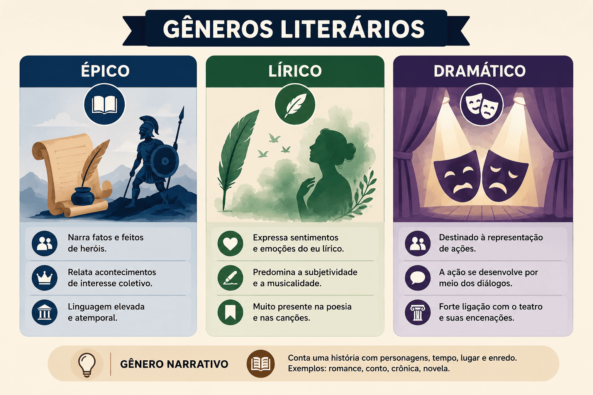

Gêneros Literários: conceito, características, tipos e exemplos
Os gêneros literários são formas de organização das obras literárias de acordo com suas características, estrutura, linguagem e maneira de representar experiências, acontecimentos, sentimentos e ideias. Compreender essa classificação é fundamental para analisar poemas, romances, contos, peças teatrais e outras manifestações da literatura.
Tradicionalmente, os estudos literários identificam três grandes gêneros: lírico, épico ou narrativo e dramático. Ao longo da história, entretanto, essas categorias foram reinterpretadas e ampliadas, especialmente porque a literatura apresenta formas híbridas que não se enquadram perfeitamente em uma única classificação.
Assim, estudar os gêneros literários não significa simplesmente decorar uma lista de nomes. É necessário compreender como cada gênero organiza a linguagem, quem fala no texto, como os acontecimentos são apresentados, qual é a relação com a ação e quais elementos estruturais predominam.
Neste conteúdo, você aprenderá o que são gêneros literários, conhecerá sua origem e classificação tradicional, entenderá as características dos gêneros lírico, narrativo e dramático, verá seus principais subgêneros e aprenderá a identificar essas formas em questões de Literatura e Língua Portuguesa.

O que são gêneros literários?
Os gêneros literários são categorias utilizadas para classificar as obras literárias a partir de características comuns relacionadas à sua composição, linguagem, estrutura e finalidade estética.
Essa classificação permite identificar diferentes maneiras de organizar a experiência literária. Um poema, por exemplo, pode concentrar-se na expressão de sentimentos e estados subjetivos; um romance pode apresentar personagens, acontecimentos, espaço e tempo; uma peça teatral pode organizar o texto em torno das falas e ações das personagens.
Os gêneros, portanto, funcionam como formas de organização da literatura. Eles não devem ser entendidos como modelos absolutamente rígidos, pois uma mesma obra pode combinar características de diferentes gêneros.
Gêneros literários são categorias de classificação das obras literárias segundo características relacionadas à forma de expressão, à estrutura do texto, à representação da ação e à organização da linguagem.
Como surgiu a classificação dos gêneros literários?
A classificação dos gêneros literários possui origem na Antiguidade clássica, especialmente nas reflexões de filósofos gregos sobre a arte e a poesia.
Entre os pensadores fundamentais para essa discussão está Aristóteles, que, em sua obra Poética, analisou diferentes formas de representação artística e discutiu elementos relacionados à poesia, à imitação e à ação.
A tradição posterior consolidou uma divisão bastante conhecida entre gênero lírico, gênero épico e gênero dramático. Com o desenvolvimento da literatura, o gênero épico passou a ser frequentemente relacionado ao que hoje chamamos de gênero narrativo.
Classificação tradicional
- Lírico: relacionado à expressão de sentimentos, emoções, estados de espírito e experiências subjetivas.
- Épico ou narrativo: relacionado à apresentação de acontecimentos, personagens e ações organizados em uma narrativa.
- Dramático: relacionado à representação da ação por meio de personagens, falas e situações destinadas, tradicionalmente, à encenação.
Quais são os principais gêneros literários?
A classificação tradicional reconhece três grandes gêneros literários: lírico, narrativo e dramático. Cada um apresenta características predominantes que ajudam o leitor a compreender sua organização.
| Gênero | Característica predominante | Exemplos |
|---|---|---|
| Lírico | Expressão de sentimentos, emoções e experiências subjetivas. | Poema lírico, soneto, elegia, ode, haicai. |
| Narrativo | Apresentação de acontecimentos envolvendo personagens em determinado tempo e espaço. | Romance, conto, novela, crônica, fábula. |
| Dramático | Representação de ações e conflitos por meio de personagens e diálogos. | Tragédia, comédia, drama, auto, farsa. |
Importante: a classificação dos gêneros literários indica características predominantes. Uma obra pode combinar elementos de diferentes gêneros e apresentar formas híbridas.
Gênero lírico
O gênero lírico caracteriza-se principalmente pela expressão de sentimentos, emoções, pensamentos e estados de espírito. Nele, ganha destaque a dimensão subjetiva da experiência representada.
A palavra “lírico” está historicamente associada à lira, instrumento musical utilizado na Antiguidade em apresentações de poemas. Essa relação ajuda a compreender a proximidade tradicional entre poesia lírica, musicalidade e expressão subjetiva.
No gênero lírico, é comum encontrar um eu lírico, isto é, a voz que se manifesta no poema. O eu lírico não deve ser automaticamente confundido com o autor real da obra.
Principais características do gênero lírico
- expressão de sentimentos e emoções;
- presença de subjetividade;
- valorização da musicalidade e do ritmo;
- uso frequente de linguagem conotativa;
- presença de imagens, metáforas e outras figuras de linguagem;
- destaque para a voz do eu lírico;
- construção estética concentrada da linguagem.
Principais formas do gênero lírico
- Soneto: poema tradicionalmente composto por quatorze versos, geralmente organizados em dois quartetos e dois tercetos.
- Elegia: composição associada à expressão de sentimentos de tristeza, lamento ou reflexão diante de uma perda.
- Ode: poema tradicionalmente relacionado à celebração ou exaltação de alguém, algo ou determinado tema.
- Hino: composição de caráter solene, frequentemente relacionada à exaltação de uma pessoa, grupo, ideia, instituição ou comunidade.
- Haicai: forma poética de origem japonesa, caracterizada por concisão e atenção especial à natureza e ao instante.
Eu lírico não é necessariamente o autor
Um erro frequente na interpretação de poemas é considerar que tudo o que o eu lírico afirma corresponde necessariamente às opiniões ou experiências pessoais do poeta.
O eu lírico é uma voz construída no interior do texto. Por isso, a análise deve observar aquilo que o poema efetivamente apresenta, sem transformar automaticamente a voz poética em autobiografia.
Gênero narrativo
O gênero narrativo caracteriza-se pela apresentação de acontecimentos envolvendo personagens em determinado tempo e espaço. A narrativa pode ser conduzida por um narrador e organizar os acontecimentos de diferentes maneiras.
Na tradição clássica, esse campo está relacionado ao gênero épico, marcado pela representação de feitos e acontecimentos. Na literatura moderna e contemporânea, entretanto, o termo narrativo é amplamente utilizado para abranger diferentes formas de contar histórias.
Elementos fundamentais da narrativa
- Narrador: voz responsável pela apresentação dos acontecimentos.
- Personagens: seres que participam das ações narradas.
- Enredo: organização dos acontecimentos da narrativa.
- Tempo: dimensão temporal em que os acontecimentos se desenvolvem.
- Espaço: ambiente ou lugar em que as ações acontecem.
- Conflito: situação problemática que movimenta ou estrutura a narrativa.
Principais gêneros e formas narrativas
| Forma | Características |
|---|---|
| Romance | Narrativa geralmente extensa, com desenvolvimento mais amplo de personagens, conflitos, espaços e acontecimentos. |
| Novela | Narrativa intermediária em extensão, geralmente marcada por uma sequência de acontecimentos articulados em torno de uma ação principal. |
| Conto | Narrativa geralmente breve, construída em torno de uma situação, acontecimento ou conflito concentrado. |
| Crônica | Texto geralmente breve que pode abordar acontecimentos cotidianos, comportamentos, situações sociais e reflexões do autor. |
| Fábula | Narrativa tradicionalmente curta que pode utilizar animais ou seres personificados e apresentar uma moral ou ensinamento. |
Exemplo de identificação
Imagine um texto em que um narrador apresenta a história de uma personagem, descreve o lugar onde ela vive, relata acontecimentos ocorridos ao longo de determinado período e apresenta conflitos entre as personagens.
Nesse caso, a presença de narrador, personagens, acontecimentos, tempo e espaço indica características próprias do gênero narrativo.
Gênero dramático
O gênero dramático caracteriza-se pela representação da ação por meio de personagens. Tradicionalmente associado ao teatro, esse gênero organiza a ação principalmente por meio de falas, diálogos, conflitos e indicações relacionadas à representação.
Diferentemente de uma narrativa tradicional, em que um narrador pode contar os acontecimentos, o texto dramático frequentemente apresenta as ações diretamente por meio das personagens e de suas interações.
Características do gênero dramático
- presença de personagens;
- predominância de diálogos ou falas;
- representação de conflitos;
- organização das ações em cenas ou atos;
- possibilidade de encenação;
- presença de indicações cênicas ou rubricas;
- construção da ação por meio da interação entre personagens.
Principais formas dramáticas
- Tragédia: forma dramática tradicionalmente associada a conflitos graves, sofrimento e acontecimentos de caráter trágico.
- Comédia: forma dramática que explora situações cômicas, comportamentos humanos e conflitos com efeito humorístico.
- Drama: forma que pode combinar elementos graves, emocionais e conflituosos sem necessariamente seguir a estrutura da tragédia clássica.
- Farsa: forma teatral geralmente marcada pelo exagero, pelo humor e pela representação caricatural de situações ou comportamentos.
- Auto: composição dramática tradicionalmente associada a temas religiosos ou morais, muito importante na tradição teatral medieval e ibérica.
Texto dramático e encenação
O texto dramático possui características próprias, mas sua realização pode envolver outros elementos além das palavras escritas, como atuação, cenário, iluminação, figurino, sonoplastia e direção.
Por isso, estudar o gênero dramático significa observar tanto a estrutura textual quanto sua relação potencial com a representação cênica.
Gênero épico e gênero narrativo são a mesma coisa?
Os termos épico e narrativo estão relacionados, mas não são necessariamente utilizados como sinônimos em todos os contextos teóricos.
O gênero épico está ligado à tradição clássica de representação de grandes acontecimentos, feitos heroicos e ações de personagens. Já o conceito de gênero narrativo é utilizado de maneira mais ampla para designar textos estruturados pela narração de acontecimentos.
Assim, em estudos escolares, é comum encontrar a classificação lírico, épico e dramático, enquanto abordagens mais contemporâneas frequentemente utilizam lírico, narrativo e dramático.
Para provas: observe o contexto da questão. Se o enunciado estiver trabalhando com a classificação tradicional, o termo “épico” pode aparecer. Quando o foco estiver nas estruturas de narração, é comum encontrar a denominação “narrativo”.
Gênero literário é a mesma coisa que gênero textual?
Não. Embora os conceitos estejam relacionados, gênero literário e gênero textual pertencem a classificações diferentes.
Os gêneros textuais correspondem a formas socialmente reconhecidas de utilização da linguagem em diferentes situações comunicativas, como notícia, receita, e-mail, artigo de opinião, relatório e anúncio.
Já os gêneros literários estão relacionados à organização estética das obras literárias e às diferentes formas de expressão e representação presentes na literatura.
Gêneros literários
Relacionam-se às formas de organização da literatura, como o lírico, narrativo e dramático.
Gêneros textuais
Relacionam-se às diferentes formas de uso da linguagem em situações sociais, como notícia, carta, entrevista, receita e artigo de opinião.
Gênero literário e forma literária
Também é importante diferenciar o gênero literário de formas ou subgêneros específicos. O gênero representa uma categoria mais ampla, enquanto determinadas formas apresentam características estruturais mais particulares.
| Categoria ampla | Formas ou subgêneros relacionados |
|---|---|
| Lírico | Soneto, ode, elegia, hino, haicai. |
| Narrativo | Romance, novela, conto, crônica, fábula. |
| Dramático | Tragédia, comédia, drama, farsa, auto. |
Obras podem misturar gêneros literários?
Sim. A literatura apresenta numerosas obras que combinam características de diferentes gêneros. Por isso, as classificações literárias devem ser utilizadas como instrumentos de análise, e não como categorias absolutamente rígidas.
Um romance, por exemplo, pode conter longos trechos de caráter lírico, enquanto uma obra teatral pode apresentar momentos narrativos ou poéticos. A literatura moderna e contemporânea ampliou ainda mais essas possibilidades de combinação.
Gêneros literários são categorias flexíveis: uma obra pode apresentar características predominantes de determinado gênero e, ao mesmo tempo, incorporar procedimentos associados a outros gêneros.
Como identificar o gênero literário de um texto?
Para identificar o gênero literário predominante em um texto, não basta observar se ele está escrito em versos ou em prosa. É necessário analisar sua estrutura, linguagem, voz discursiva e forma de representação.
Perguntas para identificar o gênero
- O texto concentra-se na expressão de sentimentos e estados subjetivos?
- Há um eu lírico em destaque?
- Existem acontecimentos organizados em uma narrativa?
- Há narrador, personagens, tempo e espaço?
- A ação é apresentada principalmente por meio de falas e diálogos?
- O texto apresenta estrutura relacionada à encenação?
- Quais elementos aparecem com maior intensidade?
Dica para provas
Em questões de vestibular e do ENEM, observe os elementos predominantes do texto. Um poema não é necessariamente lírico apenas porque está escrito em versos, assim como um texto em prosa não é automaticamente narrativo. A classificação depende das características efetivamente presentes na obra.
Diferenças entre os três principais gêneros literários
| Aspecto | Lírico | Narrativo | Dramático |
|---|---|---|---|
| Foco predominante | Subjetividade e expressão. | Narração de acontecimentos. | Representação da ação. |
| Elemento de destaque | Eu lírico. | Narrador e personagens. | Personagens e diálogos. |
| Organização | Versos ou outras formas poéticas. | Enredo narrativo. | Cenas, atos e falas. |
| Exemplos | Soneto, ode, elegia. | Romance, conto, novela. | Tragédia, comédia, drama. |
Gêneros literários e interpretação de textos
Conhecer os gêneros literários contribui diretamente para a interpretação de textos. Quando o leitor reconhece a estrutura predominante de uma obra, consegue compreender melhor as escolhas linguísticas e os efeitos de sentido produzidos.
Em um poema lírico, por exemplo, a análise pode concentrar-se na construção da subjetividade, nas imagens poéticas, no ritmo e nas figuras de linguagem. Em uma narrativa, é importante observar o narrador, as personagens, o tempo, o espaço, o conflito e a organização do enredo. No texto dramático, ganham importância as falas, os conflitos e as indicações relacionadas à representação.
Estratégia de leitura
Ao receber um texto literário em uma questão, primeiro identifique o que está sendo representado e como essa representação é construída. Depois, observe os elementos estruturais e linguísticos que confirmam sua interpretação.
Gêneros literários no ENEM e nos vestibulares
O conhecimento sobre gêneros literários pode aparecer em questões que exploram características de poemas, narrativas, textos dramáticos e diferentes manifestações da literatura.
Entretanto, as questões frequentemente vão além da simples identificação do gênero. É comum que o estudante precise relacionar a estrutura do texto aos efeitos de sentido, à linguagem, ao contexto histórico-literário e às características estéticas da obra.
- identifique o gênero predominante;
- observe quem assume a voz no texto;
- procure elementos narrativos, líricos ou dramáticos;
- analise a linguagem utilizada;
- relacione forma e conteúdo;
- considere o contexto literário quando ele for apresentado;
- não classifique o texto apenas pela aparência externa.
Cuidado com uma classificação simplista
Um texto pode apresentar características de mais de um gênero. Por isso, quando uma questão solicitar a identificação do gênero predominante, procure os elementos estruturais mais relevantes e verifique quais características organizam o texto como um todo.
Resumo dos gêneros literários
Para memorizar
- Lírico: expressão de sentimentos, emoções e experiências subjetivas.
- Narrativo: apresentação de acontecimentos envolvendo personagens em determinado tempo e espaço.
- Dramático: representação de ações e conflitos por meio de personagens, falas e situações.
- Gêneros não são rígidos: uma obra pode combinar características de diferentes categorias.
- Identificação: deve considerar a estrutura e os elementos predominantes do texto.
Em síntese: compreender os gêneros literários significa reconhecer diferentes maneiras de organizar a linguagem artística. O gênero lírico privilegia a expressão subjetiva; o narrativo organiza acontecimentos e personagens; e o dramático estrutura a representação da ação. Essas categorias ajudam na leitura, mas não impedem que uma obra apresente características híbridas.
Perguntas frequentes sobre gêneros literários
O que são gêneros literários?
São categorias utilizadas para classificar obras literárias de acordo com características de estrutura, linguagem, representação e organização estética.
Quais são os três principais gêneros literários?
Tradicionalmente, os três grandes gêneros são o lírico, o épico e o dramático. Em muitas abordagens atuais, utiliza-se a denominação lírico, narrativo e dramático.
Qual é a principal característica do gênero lírico?
A expressão de sentimentos, emoções, estados de espírito e experiências subjetivas, frequentemente por meio da voz do eu lírico.
Qual é a principal característica do gênero narrativo?
A apresentação de acontecimentos envolvendo personagens, geralmente organizados por um narrador em determinado tempo e espaço.
Qual é a principal característica do gênero dramático?
A representação da ação por meio de personagens, falas, diálogos e conflitos, frequentemente relacionada à encenação teatral.
Uma obra pode pertencer a mais de um gênero?
Sim. As obras literárias podem combinar características de diferentes gêneros. Por isso, a classificação deve considerar os elementos predominantes e o funcionamento da obra.
Conteúdos relacionados
Produção Textual e Redação
Conteúdos sobre produção textual, argumentação, tipos textuais, gêneros discursivos, coesão, coerência, progressão temática e estratégias de escrita.
Como Fazer uma Redação Argumentativa
Aprenda a organizar tese, argumentos, desenvolvimento e conclusão em textos de caráter argumentativo.
Argumentação
Compreenda como argumentos são construídos e utilizados para sustentar pontos de vista em diferentes situações de comunicação.
Tipologia Textual
Conheça as principais características dos tipos textuais e compreenda suas funções na construção dos textos.
Gêneros Textuais
Entenda o conceito de gênero textual e as características que diferenciam os diferentes textos utilizados socialmente.
Coesão, Coerência e progressão temática
Estude os mecanismos responsáveis pela articulação das ideias e pela construção dos sentidos do texto.
Conectivos
Aprenda a utilizar conectivos para estabelecer relações de sentido e melhorar a progressão das ideias.
Referências
ARISTÓTELES. Poética. Traduções e edições diversas. São Paulo: Editora 34.
CANDIDO, Antonio. Literatura e sociedade. Rio de Janeiro: Ouro sobre Azul.
MOISÉS, Massaud. A criação literária. São Paulo: Cultrix.
SOARES, Angélica. Gêneros literários. São Paulo: Ática.
Explore Outros Conteúdos
Continue seus estudos acessando outras seções do site Mestre Kira: